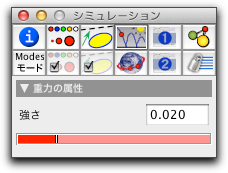

重力

| 重力 = 重力加速度 * 質量 |
重力も質点が引かれる方向に向きを持ちます。 Cinderellaでは、 直線を引くときのように、マウスボタンを押す/ドラッグする/離すという手順で重力を作ります。重力場は、力の方向を示す黒い矢線で描かれます。矢線が長いほど重力は強くなります。
次の図は、ゼロでない 速度を持つ質点に重力がどのように働くかを示しています。左側は、弾道(放物線)シミュレーションが始まる前の図です。右側は、シミュレーションの間の質点の軌跡を示します。
 |  |
||
| 動き始める前のゼロでない初速を持つ物体 | 重力の影響下にある物体の動いた跡 |
第２の例では、端点を固定し、質点どうしをひも状に ゴムバンドでつないだ場合の重力の作用を考えます。 CindyLabの初期状態で、このシステムは激しく振動します。しかしながら、環境設定によって、すこし摩擦力を加えてやれば、このシステムは、しばらくして平衡状態になります。この平衡状態では、質点のチェーンは完全な放物線を描きます。
 |
| 重力の影響下にある物体のチェーン |
次の図はさらに精巧な例を示します。ここでは、背景に金門橋の写真を載せています。絵の左上の部分は、重力の影響を受けているゴムバンド・チェーンの物理学シミュレーションを示します。それを射影変換Projective Transformation によって金門橋の写真の枠に写しました。重力をちょうどよい値に合わせると、ゴムバンドの形状と橋を支えるケーブルの形状がそっくりであることがわかります。
 |
| 金門橋の解析 |
重力のインスペクタ
A CindyLabの重力場は、比較的小さな値にセットされる内蔵の係数を備えています。 "重力加速度" の実際の値は、描かれた重力の矢線の長さにこの係数を掛けて計算されます。
 |
| 重力インスペクタ |
重力と CindyScript
CindyLab のいくつかの要素のように、重力には、 CindyScriptで読み書きのできるいくつかの要素があります。:
- strength: 大きさの要因 (実数、読み書き可)
- potential: t 質点の重力場における位置エネルギー(実数、読み出しのみ、座標のとり方に依存する付加的定数として定義される)
- pe: 物体の重力場における位置エネルギー(実数、読み出しのみ、座標のとり方に依存する付加的定数として定義される)
- simulate: 重力場シミュレーションのON/OFF(ブール値, 読み書き)
次もご覧ください
Page last modified on Tuesday 13 of March, 2012 [13:33:57 UTC].
The original document is available at
http://doc.cinderella.de/tiki-index.php?page=GravityJ